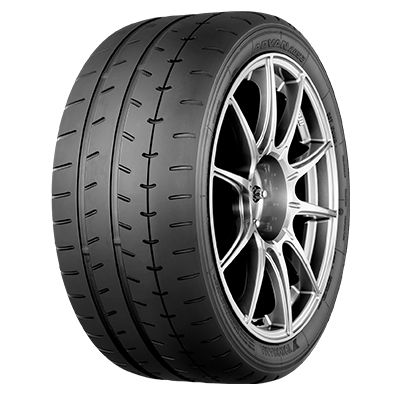

Car Wheel Designs
Car wheel designs encompass various aspects
such as size, materials, spoke patterns, and finishes. Here's a breakdown:
1. Size: Wheels come in different diameters, commonly ranging from 15 to 22 inches, with larger sizes often associated with sportier or luxury vehicles.
2. Materials Wheels are typically made from aluminum alloy, steel, or carbon fiber. Aluminum alloy wheels are popular due to their combination of strength and light weight, enhancing performance and fuel efficiency.
3. Spoke Patterns Spokes are the structural elements connecting the wheel's center to its outer edge. There are countless spoke designs, including simple and complex patterns, with variations in number, thickness, and curvature. Common designs include mesh, split-spoke, and multi-spoke patterns.
4. Finishes Wheels can be finished in various ways to achieve different aesthetics and protection against corrosion. Common finishes include polished, painted, machined, and chrome-plated.
5 Offset and Backspacing: These terms refer to the positioning of the wheel mounting surface relative to the centerline of the wheel. Offset affects the wheel's stance and how it fits within the wheel well, influencing handling characteristics and appearance.
Conclusively, wheel design is a combination of engineering considerations, aesthetic preferences, and performance requirements tailored to the specific vehicle and the owner's tastes.
COMPONENTS OF WHEELS
The main components of a wheel includes:
1. Rim: The outer circular part of the wheel where the tire is mounted.

2. Tire: The rubber covering that provides traction and cushioning. 
3. Hub: The central part of the wheel that mounts to the axle.

4. Spokes: Rods or wires connecting the rim to the hub, providing structural support.
5. Axle: The shaft on which the wheel rotates.
6. Bearings: Components that allow the wheel to rotate smoothly around the axle.
7. Valve stem: A small tube for inflating the tire, typically located on the rim.

8. WHEEL DISC This is metallic and can be made of different materials and have different
shapes, but basically, it is a tube and the rest of the elements of the wheel are placed on it. These
other elements are attached to it through bolts and nuts.

9. COUNTERWEIGHTS The Counterweights is an element that some people are unaware of but that is essential for safe driving. These counterweights are small in size and are usually made of lead. These are placed on the rims and their main purpose is to balance all four wheels and prevent vibrations while driving. Counterweights prevents annoying vibration while driving.
TYPE OF WHEELS
1. Cast Iron Wheels: These wheels are made from cast iron and are chosen for their excellent durability and weight-bearing capacity. Cast iron wheels are commonly used in industrial settings where heavy loads need to be moved.
2. Steel Wheels: Steel wheels are known for their strength and ability to handle high load capacities. They are often used in applications such as material handling equipment, carts, and trailers.
3. Aluminum Wheels: Aluminum wheels are lightweight yet strong, making them a popular choice in automotive applications. They offer better fuel efficiency and improved handling due to their reduced weight.
4. Plastic Wheels: Plastic wheels are lightweight, corrosion-resistant, and cost-effective. They find application in various industries, including home appliances, furniture, toys, and medical equipment.
5. Rubber Wheels: Rubber wheels provide excellent shock absorption, noise reduction, and grip. They are commonly used in equipment and machinery that require smooth and quiet operation, such as office chairs, trolleys, and small carts.
6. Pneumatic Wheels: Pneumatic wheels are air-filled and feature a tire-like construction. They offer superior shock absorption and are commonly used in outdoor applications like garden carts, wheelbarrows, and bicycles.
7. Polyurethane Wheels: Polyurethane wheels are known for their durability, load-bearing capacity, and resistance to chemicals, oils, and solvents. They are often used in industrial equipment, machinery, and material handling applications.
8. Nylon Wheels: Nylon wheels possess high load-bearing capacity, excellent wear resistance, and low rolling resistance. They are commonly used in industrial settings, such as conveyors, cranes, and heavy machinery.
9. Solid Rubber Wheels: Solid rubber wheels are made from solid rubber compounds and provide great durability and resistance to punctures. They are frequently used in construction, warehouse equipment, and hand trucks.
10. Trolley Wheels: Trolley wheels are designed specifically for light-duty applications like shopping carts, luggage, and small machines. They are often made of plastic or rubber, offering easy maneuverability and smooth rolling
FUNCTONALITY OF WHEEL IN AUTOMOBILE
The car wheel is one of the essential parts of a vehicle. It produces a rotatory function and moves the car from one point to another. Since their invention, car wheels have changed various designs, styles and structures. The car gets the leverage it needs to move by the wheel, transferring power from the axle and the hub to the tires. The larger the wheel is compared to the engine's power, the bigger the leverage and the faster the car moves. Vehicle wheels have the function of carrying the weight of the vehicle and exchanging forces with the road surface to control its path.